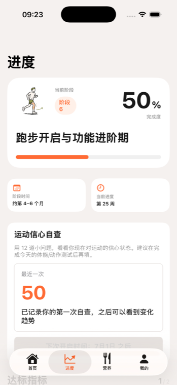
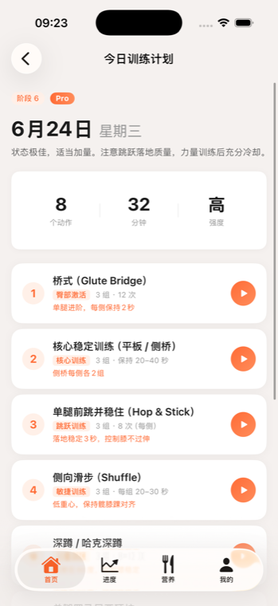
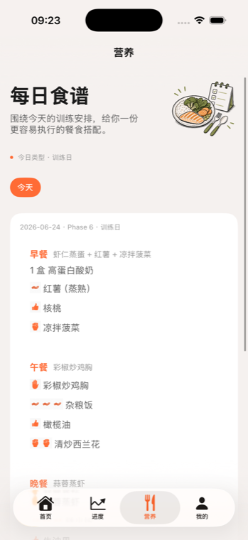

基于顶级运动康复科学，将你的康复拆解为7个精准阶段。每个阶段有明确的晋级标准指标，绝不拔苗助长。
第一周消肿与ROM恢复，第四周基础力量建立，逐步增加单腿支撑与核⼼稳定，为恢复跑跳打下坚实基础。
恢复直线慢跑，增加多方向变向，完成反向纵跳等高阶测试。打破心理恐惧，重新主宰赛场。
每日感知疲劳度，根据你的恢复状态、手术时间与半月板情况，
动态调整每天的训练强度与动作库。专属的智能康复师。





ReACL的每一个康复动作与晋级标准，均遵循国际前沿运动医学文献指南标准。
这不是感性判断，是严谨的科学循证。


选择适合你的使用方式
 进入小程序体验
进入小程序体验
 扫码开通 Pro（仅小程序）
扫码开通 Pro（仅小程序）